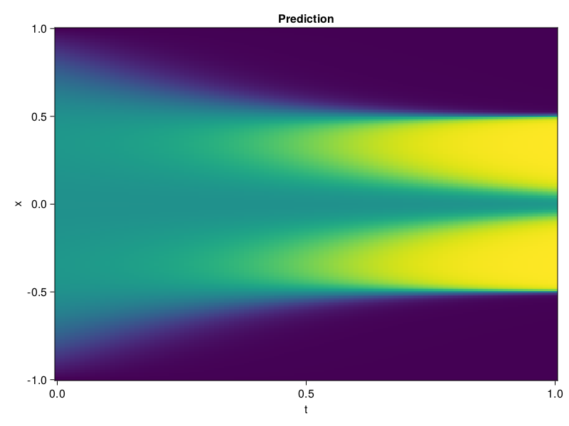

Allen-Cahn Equation with Sequential Training
In this tutorial we are going to solve the Allen-Cahn equation with periodic boundary condition from $t=0$ to $t=1$. The traning process is split into four stages, namely $t\in [0,0.25]$, $t\in [0.0,0.5]$, $t\in [0.0,0.75]$ and $t\in [0.0, 1.0]$.
using ModelingToolkit, IntervalSets
using Sophon
using Optimization, OptimizationOptimJL
@parameters t, x
@variables u(..)
Dₓ = Differential(x)
Dₓ² = Differential(x)^2
Dₜ = Differential(t)
eq = Dₜ(u(x, t)) - 0.0001 * Dₓ²(u(x, t)) + 5 * u(x,t) * (abs2(u(x,t)) - 1.0) ~ 0.0
domain = [x ∈ -1.0..1.0, t ∈ 0.0..0.25]
bcs = [u(x,0) ~ x^2 * cospi(x),
u(-1,t) ~ u(1,t)]
@named allen = PDESystem(eq, bcs, domain, [x, t], [u(x, t)])\[ \begin{align} - 0.0001 \frac{\mathrm{d}}{\mathrm{d}x} \frac{\mathrm{d}}{\mathrm{d}x} u\left( x, t \right) + 5 \left( -1 + \left|u\left( x, t \right)\right|^{2} \right) u\left( x, t \right) + \frac{\mathrm{d}}{\mathrm{d}t} u\left( x, t \right) =& 0 \end{align} \]
Then we define the neural net, the sampler, and the training strategy.
chain = FullyConnected(2, 1, tanh; hidden_dims=16, num_layers=4)
pinn = PINN(chain)
sampler = QuasiRandomSampler(500, (300, 100))
strategy = NonAdaptiveTraining(1, (50, 1))
prob = Sophon.discretize(allen, pinn, sampler, strategy)OptimizationProblem. In-place: true
u0: ComponentVector{Float64}(layer_1 = (weight = [0.2819974422454834 0.4845367968082428; -1.0419402122497559 -0.7770209908485413; … ; 0.8465204238891602 1.2656809091567993; 0.7099384665489197 0.8933755159378052], bias = [0.0; 0.0; … ; 0.0; 0.0;;]), layer_2 = (weight = [0.6131483316421509 0.3740968406200409 … -0.175857275724411 -0.7032626867294312; -0.318293035030365 -0.46133893728256226 … 0.613399088382721 -0.18276579678058624; … ; -0.5577437877655029 0.6483290195465088 … -0.44448256492614746 0.04715992882847786; -0.552482008934021 0.371153861284256 … 0.40208354592323303 0.061694759875535965], bias = [0.0; 0.0; … ; 0.0; 0.0;;]), layer_3 = (weight = [0.12005380541086197 0.7133716344833374 … -0.573498547077179 0.1789388507604599; -0.70997154712677 -0.21206353604793549 … 0.08250802010297775 -0.47871842980384827; … ; -0.3341961205005646 0.2247045338153839 … 0.050439465790987015 -0.45427098870277405; 0.6273081302642822 0.6689116358757019 … -0.5723799467086792 -0.1913682222366333], bias = [0.0; 0.0; … ; 0.0; 0.0;;]), layer_4 = (weight = [-0.5551598072052002 -0.6138374209403992 … 0.711637556552887 -0.013796848244965076; -0.2299940437078476 0.4656817615032196 … -0.028186284005641937 0.4124586284160614; … ; 0.5018168687820435 0.5449326038360596 … 0.07904704660177231 -0.23034211993217468; 0.27951011061668396 -0.33873283863067627 … 0.4471953213214874 0.2191460132598877], bias = [0.0; 0.0; … ; 0.0; 0.0;;]), layer_5 = (weight = [0.27067723870277405 0.6198651194572449 … 0.2806098759174347 0.2136385142803192], bias = [0.0;;]))We solve the equation sequentially in time.
function train(allen, prob, sampler, strategy)
bfgs = BFGS()
res = Optimization.solve(prob, bfgs; maxiters=2000)
for tmax in [0.5, 0.75, 1.0]
allen.domain[2] = t ∈ 0.0..tmax
data = Sophon.sample(allen, sampler)
prob = remake(prob; u0=res.u, p=data)
res = Optimization.solve(prob, bfgs; maxiters=2000)
end
return res
end
res = train(allen, prob, sampler, strategy)u: ComponentVector{Float64}(layer_1 = (weight = [0.6751292283170114 0.4128627951866363; -1.2196920438388725 -0.08892197169088015; … ; 1.3093597886953119 1.401537677423796; 0.4008667555534783 0.7219485655254497], bias = [0.023284750695946283; -0.9821816491654444; … ; -1.2526448725588264; -0.37127171689749106;;]), layer_2 = (weight = [0.6687908164845264 0.3353672472132322 … -0.06858593309362519 -0.3457010338463032; -0.29916241807423627 -0.818492663923584 … 0.8912906017565361 -0.34819227214347004; … ; -0.4601617346687047 0.835323660720846 … 0.12889757939341162 0.23773036334139414; -0.5776770185640434 0.21591224918487203 … -0.45612667251033034 -0.18776433386281596], bias = [0.5914690506033291; -0.071202115214611; … ; -0.16650267139562624; -0.3429366135161517;;]), layer_3 = (weight = [-0.09977267187066141 0.8229794943321596 … -0.8579886902320332 0.01886524569543664; -0.9173858286270538 -0.13755813398498132 … 0.2643311436321314 0.07020090552599217; … ; -0.24226466234875277 -0.2566879563493018 … -0.06718026069389821 -0.3329824097150361; 0.27932616827915746 1.0366898347146656 … -0.8408842327320489 -0.3505652235057614], bias = [-0.803815612225169; -0.44579081604306786; … ; 0.010821041039540983; -0.1312788265744569;;]), layer_4 = (weight = [0.4251062775524178 -0.46955149147104264 … 0.9685711060194672 -0.005228824958004011; -0.38611131735773857 0.29810570085324234 … -0.10032025387298778 0.7302487763475382; … ; 0.3490717088269189 0.3444607810837005 … 0.3651015302737969 -0.054260091890291046; 0.27888421777789285 -0.4970973758883746 … 0.2682924384077011 -0.008145787280766412], bias = [-0.16606871923494745; 0.4796728099850098; … ; -0.07138983900991516; 0.00686137791511083;;]), layer_5 = (weight = [0.62270394917318 0.10705309908289834 … -0.02570688407546435 -0.053351552096297744], bias = [-0.22477051400556855;;]))Let's plot the result.
using CairoMakie
phi = pinn.phi
xs, ts = [infimum(d.domain):0.01:supremum(d.domain) for d in allen.domain]
axis = (xlabel="t", ylabel="x", title="Prediction")
u_pred = [sum(pinn.phi([x, t], res.u)) for x in xs, t in ts]
fig, ax, hm = heatmap(ts, xs, u_pred', axis=axis)